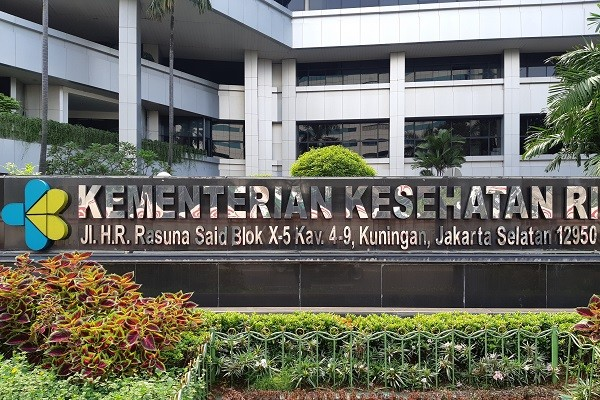

Salah satu perilaku hidup bersih dan sehat (PHBS) yang selalu digaungkan sejak lama untuk menjaga kesehatan dan kebersihan dengan mencuci tangan. Perilaku ini seharusnya menjadi kebiasaan yang sangat baik, karena selain untuk menjaga kesehatan dan kebersihan, agama juga mengajarkannya.
Kementerian Kesehatan Republik Indonesia (Kemenkes RI) adalah kementerian dalam Pemerintah Indonesia yang membidangi urusan kesehatan. Kementerian Kesehatan berada di bawah dan bertanggung jawab kepada Presiden. Kementerian Kesehatan dipimpin oleh seorang Menteri Kesehatan (Menkes) yang sejak 23 Desember 2020 dijabat oleh Budi Gunadi Sadikin.
Kementerian Kesehatan mempunyai tugas menyelenggarakan urusan pemerintahan bidang kesehatan untuk membantu Presiden dalam menyelenggarakan pemerintahan negara. Dalam melaksanakan tugas, Kementerian Kesehatan menyelenggarakan fungsi:
1. perumusan, penetapan, dan pelaksanaan kebijakan di bidang kesehatan masyarakat, pencegahan dan pengendalian penyakit, pelayanan kesehatan, dan kefarmasian, alat kesehatan, dan tenaga kesehatan
2. koordinasi pelaksanaan tugas, pembinaan, dan pemberian dukungan administrasi kepada seluruh unsur organisasi di lingkungan Kementerian Kesehatan
3. pengelolaan barang milik negara yang menjadi tanggung jawab Kementerian Kesehatan
4. pengawasan atas pelaksanaan tugas di lingkungan Kementerian Kesehatan
5. pelaksanaan bimbingan teknis dan supervisi atas pelaksanaan urusan Kementerian Kesehatan di daerah
6. pelaksanaan perumusan dan pemberian rekomendasi kebijakan pembangunan kesehatan dan pelaksanaan dukungan yang bersifat substantif kepada seluruh unsur organisasi di lingkungan Kementerian Kesehatan
Foto Gedung Kementerian Kesehatan
